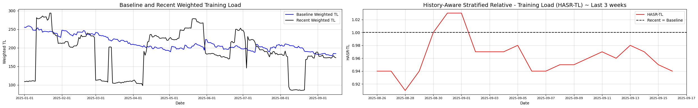
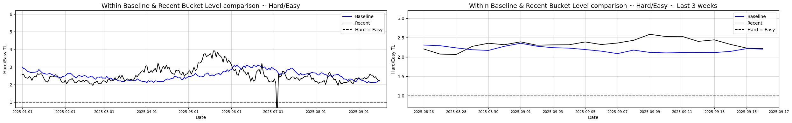

Increase your chances of staying away from running injuries - HASR-TL
Idea
When training for endurance sports, our bodies adapt over time, and whether a workout is “hard” or “easy” on the body, depends on what we’ve been doing recently and historically. The goal is to define a simple metric that shows where we are with our current training compared to what we’ve been doing in the recent past. The purpose is to:
- see if we should reduce our training load so that we don’t overreach or risk injury,
- oncrease it to match what our body has adapted to in the recent past, or
- simply define where we are in the training cycle when taking the bigger picture into account.
The idea of comparing current workload to past workload isn’t new. Sports science has long used the Acute:Chronic Workload Ratio (ACWR) to capture how today’s training compares to longer-term training history. But ACWR has well-known limitations: it usually relies on a single rolling average, and it can miss important context about peak efforts or variation in load. That’s where our approach comes in. We’ll further extend it into a more flexible and informative framework.
Selecting the metric:
To measure effort, we focus on Training Load, a metric that combines all other measures (options: distance, time, heart rate, pace or something else) into a single number. This also strongly coincides with the sport we are analyzing - trail running, where it is hard to judge intensity from speed or distance alone. We might talk more about Training Load in further blogs.
Training Load is provided from all of ours smart wearables and a practical way for making comparisons across very different sessions (and sports). We will use Garmin’s Training Load values provided in our training log.
The same approach can be applied to any other training metric. And by calculating values for each, we can see the story from multiple angles.
Deep dive
Let \(TL_i\) be the training load of the day \(i\). Our goal is to define a metric that normalizes recent TL against historical. We can think of this in two complementary components:
Baseline (long term) adaptation - Load the body has been succesfully adapted to over a longer period, assuming this distribution is “safe”, disregarding recent acute load.
- Denoted as \(TL_{\text{baseline},t}\).
- Computed over a long baseline window of \(N\) days, excluding last \(n\) days: \[\mathcal{L}_t=\{TL_{t-(n+j)}\mid j=1,\dots, N\}\]
- To give more importance to recent training within the baseline period, we assign weights decreasing with days: \[w_j = \lambda^{j-1}, \quad 0 < \lambda <= 1, \quad j = 1, ..., N,\] where more recent baseline days contribute more to defining the baseline load.
Recent training pattern - Load the body is currently being exposed to, capturing acute training load.
- Denoted as \(TL_{\text{recent},t}\).
- Computed over a recent window of \(n\) days: \[\mathcal{R}_t=\{TL_{t-j}\mid j=1,\dots,n\}\].
- This can also be weighted to emphasize the most recent sessions: \[v_j = \lambda^{j-1}, \quad 0 < \lambda <= 1, \quad j = 1, ..., n\]
We define the parameters as:
- Baseline window: \(N = 90\) days
- Recent window: \(n = 14\) days
- Weight base \(\lambda\) = \((0.5)^\frac{1}{31} = 0.978\), so weight halves approximately every 31 days.
Additionaly: Because we aim to capture relative load patterns rather than total accumulated load, we normalize the weights so that they sum to 1. This ensures that the weighted, for example averages, for baseline and recent windows are directly comparable:
- \(\overline{w}_j = \frac{w_j}{\sum_{k=1}^{N}w_k} \quad j = 1, ..., N\)
- \(\overline{v}_j = \frac{v_j}{\sum_{k=1}^{v}w_k} \quad j = 1, ..., v\)
Notes: By keeping the baseline and recent windows non-overlapping, we ensure that the baseline reflects only training the body has already adapted to, without being influenced by recent sessions that the body has not yet adjusted to. This allows us to identify increases in stress in the recent window that may pose a risk.
Dateset: We take into account all measured activities, regardless if it was real training or not (including hiking, swimming, easy cycling etc.) and treat total daily training load as daily sample.
Percentile stratified metric
In endurance sports, training days can be grouped into a few main types:
- Easy sessions & Rest days - used for recovery, aerobic base, and technique work. These make up roughly 55% of all sessions.
- Hard sessions - tempo, threshold, VO2max, or interval workouts. Typically around 30% of sessions.
- Long days - the occasional very long run, bike ride, or race that forms the extreme right tail of the distribution. About 15% of sessions.
By tracking these session types separately we can see if:
- easy sessins are getting too long, too intense, or too rare, ensuring that we can perform well in harder workouts,
- or recent hard sessions make up a reasonable portion of total sessions to allow sufficient recovery,
- or recent long days are not too frequent or extreme.
We will divide our days into these three categories based on Training Load values. Baseline window training load percentiles to define thresholds as this approach is individualized, automatic, and reproducible. These thresholds are then applied to both baseline and recent data.
- This ensures the baseline distribution reflects the training the body has already adapted to, providing a safe reference.
- Recent sessions are evaluated relative to this safe baseline, so any increase in intensity, frequency, or duration signals higher acute load or potential risk.
Formally, let \(\mathcal{Q}^w_p(\mathcal{L}_t)\) be weighted \(p\)-th quantile of the baseline window \(\mathcal{L}_t\) using weights \(w_j\) and define the baseline and recent buckets using baseline percentiles \(q^w_{70,t}\) and \(q^w_{90,t}\) as follows:
- Easy sessions & Rest days: Training loads falling below the weighted \(q_{low}\) percentile of the window: \[TL \leq q^w_{low,t}=Q^w_{low}(\mathcal{L}_t)\]
- Hard sessions: Training loads between the weighted \(q_{low}\) and \(q_{high}\) percentiles: \[q^w_{70,t} < TL \leq q^w_{high,t}=Q^w_{high}(\mathcal{L}_t)\]
- Long days: Training loads above the weighted 90th percentile: \[TL > q^w_{high,t}=Q^w_{high}(\mathcal{L}_t)\]
Clarifying note: In order to perform any structured analysis, each session must be assigned to a bucket based on the percentile thresholds. This means that some sessions may fall into different buckets due to small differences in Training Load, even if their physiological impact is similar. So these categories should be interpreted with caution. Categories are a practical tool for analysis and a guide, rather than absolute labels. When interpreting them, consider the broader context.
Note on weighted percentiles: The weighted percentile represents the TL at which the cumulative sum of weights reaches the desired fraction of total weight. This accounts for the fact that more recent baseline sessions contribute more to the threshold.
Having defined these buckets, we summarize each bucket by the weighted average training load within, where we allow more recent training days to contribute more to the bucket averages. With this, we make the metric sensitive to shifts in the typical intensity of each type of session within the bucket.
Based on my training data (with a hardcoded mapping into the categories Rest, Easy, Hard, Long, and Other), the distribution of training loads and their descriptive values are as follows:
- Rest — 14% of days, TL = avg 0, SD 0
- Easy — 47% of days, TL = avg 96, SD 43
- Hard — 14% of days, TL = avg 190, SD 56
- Long — 18% of days, TL = avg 218, SD 96
- Other — 7% of days, TL = avg 130, SD 66
Let \(w_j\) be the weight of day \(j\) in the baseline window \(\mathcal{L}_t\) and \(v_j\) be the weight of day \(j\) in the recent window \(\mathcal{R}_t\). We then define the weighted averages within each bucket as:
Baseline bucket weighted averages:
\[\text{Easy}: \mu^w_{1,t} = \mathbb{E}_w[\,TL \mid TL \in \mathcal{L}_t,\; TL \le q^w_{low,t}\,]\] \[\text{Hard}: \mu^w_{2,t} = \mathbb{E}_w[\,TL \mid TL \in \mathcal{L}_t,\; q^w_{low,t} < TL \le q^w_{high,t}\,]\] \[\text{Long}: \mu^w_{3,t} = \mathbb{E}_w[\,TL \mid TL \in \mathcal{L}_t,\; TL > q^w_{high,t}\,]\]
Recent bucket weighted averages:
\[\text{Easy}: \nu^w_{1,t} = \mathbb{E}_w[\,TL \mid TL \in \mathcal{R}_t,\; TL \le q^w_{low,t}\,]\] \[\text{Hard}: \nu^w_{2,t} = \mathbb{E}_w[\,TL \mid TL \in \mathcal{R}_t,\; q^w_{low,t} < TL \le q^w_{high,t}\,]\] \[\text{Long}: \nu^w_{3,t} = \mathbb{E}_w[\,TL \mid TL \in \mathcal{R}_t,\; TL > q^w_{high,t}\,]\]
Where \(\mathbb{E}[\cdot]\) denotes the empirical weighted mean \(\mathbb{E}_w[v] = \frac{\sum_{i=1}^nw_iv_i}{\sum_{i=1}^nw_i}\) over the subset of training load values falling into the specified bucket.
In addition to the weighted averages, we can also track the proportion of sessions falling into each bucket in both the baseline and the recent window. Wheres the proportion of sessions falling into each bucket in Baseline window as pre-determined with quantiles, the number of easy, hard, and long sessions is not fixed once baseline thresholds are applied to recent training. For example, if the proportion of easy days decreases in recent window may signal insufficient recovery.
Formally, let: \[\pi_{k,t}^{(b)} \quad \text{and} \quad \pi_{k,t}^{(r)}\] denote proportions of sessions in bucket \(k = 1,2,3\) in baseline and recent window respectively.
Most recent Session Classification
In addition to aggregated metrics, we can also assess each most recent individual session in the context of the baseline distribution. Specifically, for the most recent training session (e.g., the date of analysis), we can determine where its Training Load falls within the weighted baseline distribution.
This can be expressed as the weighted percentile (or baseline-relative quantile rank) of the session:
\[\phi_t = \frac{\sum_{j \in \mathcal{L}_t} w_j \,\mathbf{1}\{\,TL_j \leq TL_t^{(\text{recent})}\}}{\sum_{j \in \mathcal{L}_t} w_j}\]
This allows us to assign the session to one of the predefined buckets — Easy, Hard, or Long — using the same percentile thresholds derived from the baseline window:
\[ \text{Session classification} = \begin{cases} \text{Easy} & \text{if } TL \le q^w_{\text{low},t} \\[2mm] \text{Hard} & \text{if } q^w_{\text{low},t} < TL \le q^w_{\text{high},t} \\[1mm] \text{Long} & \text{if } TL > q^w_{\text{high},t} \end{cases} \]
Also, as mentioned above, these classifications are meant as guidance; a more complete understanding comes from considering the weighted percentile values, which provide richer context on the session’s relative intensity.
By doing this, we can assess the acute characteristics of the latest session relative to what the athlete has already adapted to and estimate how individual session contributes to overall training stress. This information can then guide adjustments for upcoming workouts to ensure we stay on track with the training plan.
History-Aware Statified Relative - Training Load (HASR-TL)
Once training sessions are divided into the three percentile-based buckets, defined from the baseline window, we can combine them into a single, interpretable metric that reflects how recent training compares to the athlete’s long-term adaptation. The central idea is weighted aggregation, where each bucket contributes differently to the overall metric. By aggregating the per-bucket loads with appropriate weights, HASRTL produces a single number that reflects how the overall recent training load compares to the baseline adaptation.
Weighted aggregation
Let \(w_1, w_2, w_3\) denote weights for easy, hard, and long sessions, respectively, with \[w_1+w_2+w_3=1,\quad w_k\ge 0\]. The baseline aggregate load is then: \[TL_{\text{baseline},t} = w_1 \mu_{1,t} + w_2 \mu_{2,t} + w_3 \mu_{3,t}.\] Similarly, the recent aggregate load is: \[TL_{\text{recent},t} = w_1 \nu_{1,t} + w_2 \nu_{2,t} + w_3 \nu_{3,t}.\]
Finally, the History-Aware Stratified Relative Training Load (HASRTL) is defined as: \[\Delta_t = \frac{TL_{\text{recent}}}{TL_{\text{baseline}}}.\]
Here, \(\Delta_t\) expresses how the current (recent) training load compares to the long-term baseline. It can be interpreted as a percentage increase or decrease of recent load relative to baseline adaptation.
Since recent sessions are classified using baseline-defined buckets, \(\Delta_t\) represents the relative training load compared to what the athlete has already adapted to, making it a robust measure of both increased stress and potential risk.
Selection of weights \(w_1, w_2, w_3\)
When defining the buckets weights, for our purpose, we have to consider the bucket’s contribution to adaptation and also their potential impact on injury risk. The weights should reflect the relative importance of bucket’s session type in promoting positive training effects while also accounting for their role in acute stress spikes that may increase the probability of injury.
- Easy sessions: As we defined them, they are frequent and involve low-intensity activities. They have low impact on both the adaptation and injury risk. Weight reflects their impact on training adaptation and injury risk.
- \(w_1 = 0.15\)
- Hard sessison: Less frequent but high-intensity activities that drive the adaptation and also impose higher acute loads that increase injury risk. Weight reflects their contribution to acute stress.
- \(w2 = 0.40\)
- Long sessison: They are rare but lead to high cumulative stress. They significantly contribute to adaptation and also pose a highest risk of injury. Weight reflects their peak stress contribution.
- \(w3: = 0.45\)
These weights are not directly measurable — they are largely subjective, based on expert knowledge, experience, and general principles of training load management rather than precise data.
Interpretation & Bucket-level diagnostics
Although \(\Delta_t\) provides a clear mathematical ratio of recent to baseline training load, its practical interpretation is less straightforward — it is not always obvious when an increase or decrease becomes significant, risky, or indicative of detraining.

The idea behind the HASR-TL metric is to summarize this relationship in a single number, but a deeper understanding comes from also examining the individual training buckets (e.g., easy, hard, long). Comparing these buckets within the baseline and recent windows, and between them, helps reveal where changes originate and adds richer context than the ratio alone.
By comparing bucket values within the same window, we gain insight to how well the training program is balanced across session types. This helps us check whether easy, hard, and long sessions are clearly distinct, or whether the loads are starting to blur together — which could reduce the effectiveness of the training. In practice, we calculate pairwise ratios of bucket weighted averages:
\[\zeta_{\mu_i, \mu_j} = \frac{\mu_{i,t}}{\mu_{j,t}} \quad \text{and} \quad \zeta_{\nu_i, \nu_j} = \frac{\nu_{i,t}}{\nu_{j,t}}, \quad i,j = 1,2,3, i \neq j\]
By monitoring these values, we can identify trends such as if easy vs. hard sessions are becoming too similar, which might indicate reduced stimulus diversity.

To understand which types of sessions are driving changes in overall load and what type of training have we been emphasizing lately, we compare values each bucket between recent and baseline windows.
\[\delta_{k,t} = \frac{\nu_{k,t}}{\mu_{k,t}}, \quad k = 1,2,3\]
This ratio focuses on the intensity or load of sessions of a given type, independent of how often these sessions occur.
For example, a rise in \(\delta_{1,t}\) might indicate that easy sessions are becoming more demanding relative to the baseline. Whereas a decrease in \(\delta_{3,t}\) suggests that long sessions are less intense, long possibly absent.
In contrast, to see how the distribution of session types is shifting, we compare the proportion of each session type in the recent window relative to the baseline:
\[\rho_{k,t} = \frac{\pi_{k,t}^{(r)}}{\pi_{k,t}^{(b)}}, \quad k=1,2,3\]
This ratio captures frequency changes, not intensity.
For example, \(\rho_{1,t} < 1\) may indicate that recovery-oriented easy days are becoming too rare, while \(\rho_{3,t} > 1\) suggests long sessions are occurring more frequently, than the body is adapted to.
Together, these diagnostics offer a comprehensive view of training composition and its evolution and form the foundation for interpreting the aggregated HASRTL metric. However, the key question remains: how large a change is meaningful, risky, or indicative of under or over-training? These interpretive challenges will be explored in the next chapter.
Implementation
These statistics are similar to activity statistics presented in the Data blog, daily calculated and available for review and possible analysis in Google sheets. They are under Activity Log file - HASR-TL sheet.
src/main.py script, on my Github repository under the
history_aware_relative_stratified_training_load
folder.